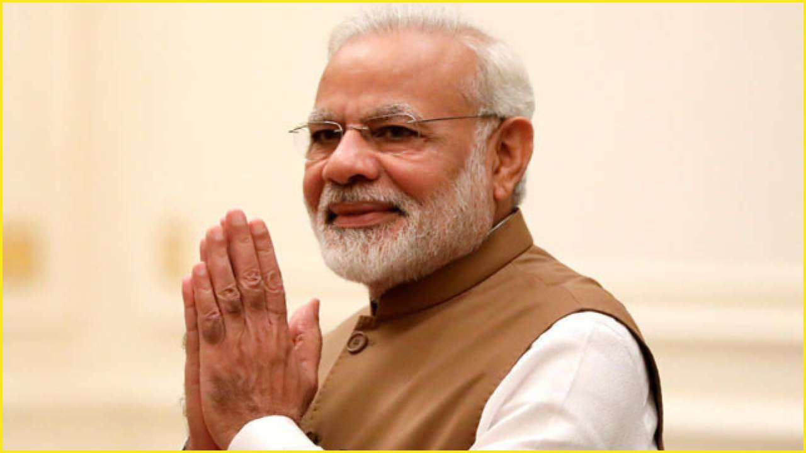

Narendra Damodardas Modi
14th Prime Minister of India
Narendra Damodardas Modi
(Gujarati: born 17 September 1950) is an Indian politician serving as the 14th and current prime minister of India since 2014. Modi was the chief minister of Gujarat from 2001 to 2014 and is the Member of Parliament from Varanasi. He is a member of the Bharatiya Janata Party (BJP) and of the Rashtriya Swayamsevak Sangh (RSS), a right-wing Hindu nationalist paramilitary volunteer organisation. He is the first prime minister to have been born after India's independence in 1947 and the longest serving prime minister from outside the Indian National Congress.
Modi was born and raised in Vadnagar in northeastern Gujarat, where he completed his secondary education. He was introduced to the RSS at age eight. He has discussed having to work as a child in his father's tea stall in the Vadnagar railway station, which has not been reliably corroborated. At age 18, Modi was married to Jashodaben Chimanlal Modi, whom he abandoned soon after. He first publicly acknowledged her as his wife more than four decades later when required to do so by Indian law, but has made no contact with her since. Modi has asserted he had travelled in northern India for two years after leaving his parental home, visiting a number of religious centres, but few details of his travels have emerged. Upon his return to Gujarat in 1971, he became a full-time worker for the RSS. After the state of emergency was declared by prime minister Indira Gandhi in 1975, Modi went into hiding. The RSS assigned him to the BJP in 1985 and he held several positions within the party hierarchy until 2001, rising to the rank of general secretary.[c]
Early life and education
Narendra Damodardas Modi was born on 17 September 1950 to a Gujarati Hindu family of grocers in Vadnagar, Mehsana district, Bombay State (present-day Gujarat). He was the third of six children born to Damodardas Mulchand Modi (c.1915–1989) and Hiraben Modi (born c.1920).[29][b] Modi's family belonged to the Modh-Ghanchi-Teli (oil-presser) community, which is categorised as an Other Backward Class by the Indian government.
Modi had only infrequently spoken of his family background during his 13 years as chief minister of Gujarat. In the run up to the 2014 national elections, he began to regularly draw attention to his low-ranking social origins and to having to work as a child in his father's tea shop on the Vadnagar railway station platform, a description that the evidence of neighbours does not entirely corroborate. Modi completed his higher secondary education in Vadnagar in 1967, where teachers described him as an average student and a keen gifted debater, with interest in theatre. Modi preferred playing larger-than-life characters in theatrical productions, which has influenced his political image.
Early political career
In June 1975, Prime Minister Indira Gandhi declared a state of emergency in India which lasted until 1977. During this period, known as "The Emergency", many of her political opponents were jailed and opposition groups were banned. Modi was appointed general secretary of the "Gujarat Lok Sangharsh Samiti", an RSS committee co-ordinating opposition to the Emergency in Gujarat. Shortly afterwards, the RSS was banned. Modi was forced to go underground in Gujarat and frequently travelled in disguise to avoid arrest. He became involved in printing pamphlets opposing the government, sending them to Delhi and organising demonstrations. Modi was also involved with creating a network of safe houses for individuals wanted by the government, and in raising funds for political refugees and activists. During this period, Modi wrote a book in Gujarati, Sangharsh Ma Gujarat (In The Struggles of Gujarat), describing events during the Emergency. Among the people he met in this role was trade unionist and socialist activist George Fernandes, as well as several other national political figures. In his travels during the Emergency, Modi was often forced to move in disguise, once dressing as a monk, and once as a Sikh.
Modi became an RSS sambhag pracharak (regional organiser) in 1978, overseeing RSS activities in the areas of Surat and Vadodara, and in 1979 he went to work for the RSS in Delhi, where he was put to work researching and writing the RSS's version of the history of the Emergency. He returned to Gujarat a short while later, and was assigned by the RSS to the BJP in 1985. In 1987 Modi helped organise the BJP's campaign in the Ahmedabad municipal election, which the BJP won comfortably; Modi's planning has been described as the reason for that result by biographers. After L. K. Advani became president of the BJP in 1986, the RSS decided to place its members in important positions within the BJP; Modi's work during the Ahmedabad election led to his selection for this role, and Modi was elected organising secretary of the BJP's Gujarat unit later in 1987.
Prime Minister
After the Bharatiya Janata Party led National Democratic Alliance won a landslide in the 2014 Lok Sabha election, Modi was sworn in as the Prime Minister of India on 26 May 2014. He became the first Prime Minister born after India's independence from the British Empire in 1947. Modi started his second term after the National Democratic Alliance won again in the 2019 Lok Sabha election. On 6 December 2020, Modi became the 4th longest serving Prime Minister of India and the longest serving Non-Congress Prime Minister.[209]